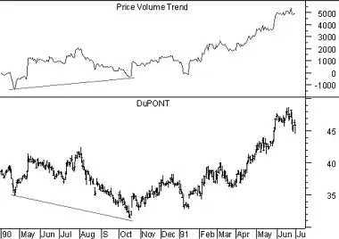

Price And Volume Trend
Overview
The Price and Volume Trend ("PVT") is similar to On Balance Volume ("OBV,") in that it is a cumulative total of volume that is adjusted depending on changes in closing prices. But where OBV adds all volume on days when prices close higher and subtracts all volume on days when prices close lower, the PVT adds/subtracts only a portion of the daily volume. The amount of volume added to the PVT is determined by the amount that prices rose or fell relative to the previous day's close.
Interpretation
The interpretation of the Price and Volume Trend is similar to the interpretation of On Balance Volume and the Volume Accumulation/Distribution Line.
Many investors feel that the PVT more accurately illustrates the flow of money into and out of a security than does OBV. This is because OBV adds the same amount of volume to the indicator regardless of whether the security closes up a fraction of a point or doubles in price. Whereas, the PVT adds only a small portion of volume to the indicator when the price changes by a small percentage and adds a large portion of volume to the indicator when the price changes by a large percentage.
Example
The following chart shows Dupont and the PVT.
 The bullish divergence (the PVT was trending higher while prices trended lower) was followed by a strong price increase.Calculation
The PVT is calculated by multiplying the day's volume by the percent that the security's price changed, and adding this value to a cumulative total.

For example, if the security's price increased 0.5% on volume of 10,000 shares, we would add 50 (i.e., 0.005 * 10,000) to the PVT. If the security's price had closed down 0.5%, we would have subtracted 50 from the PVT.